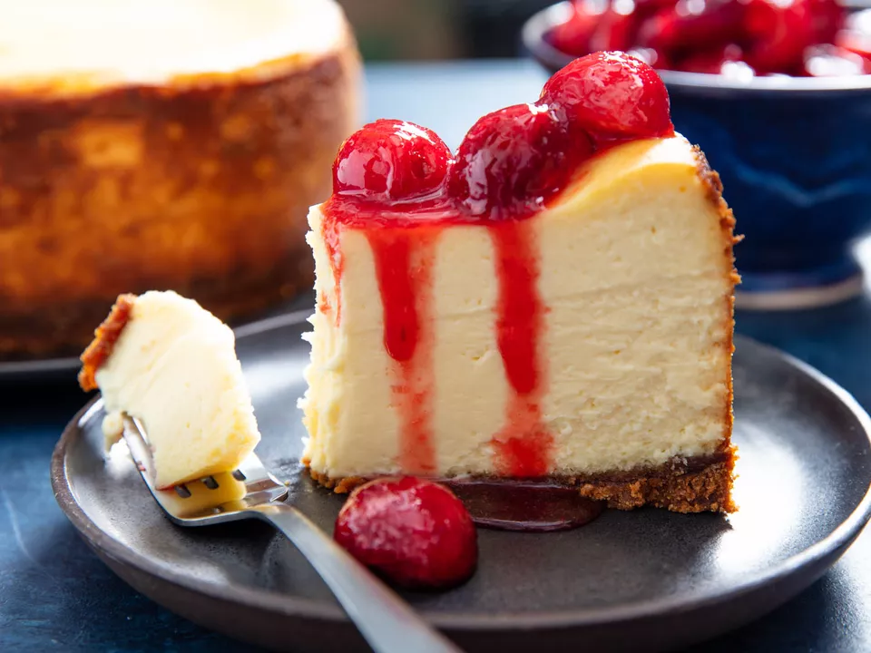
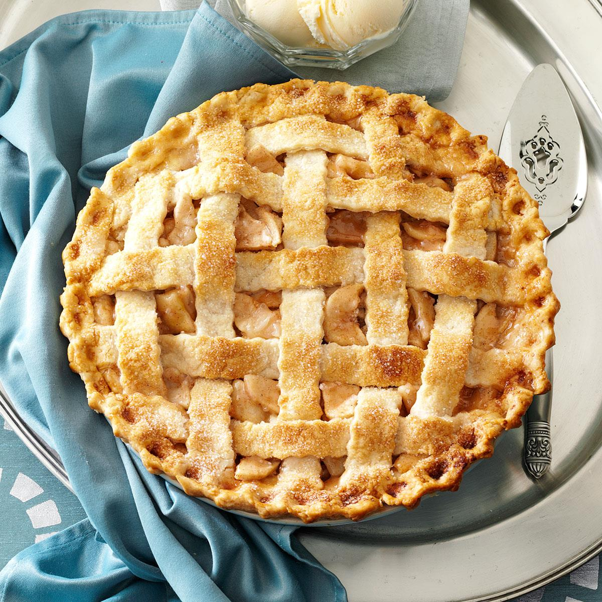
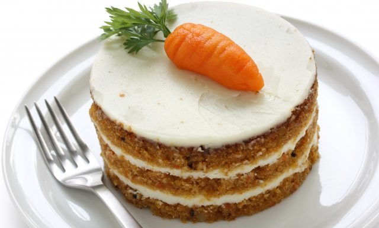
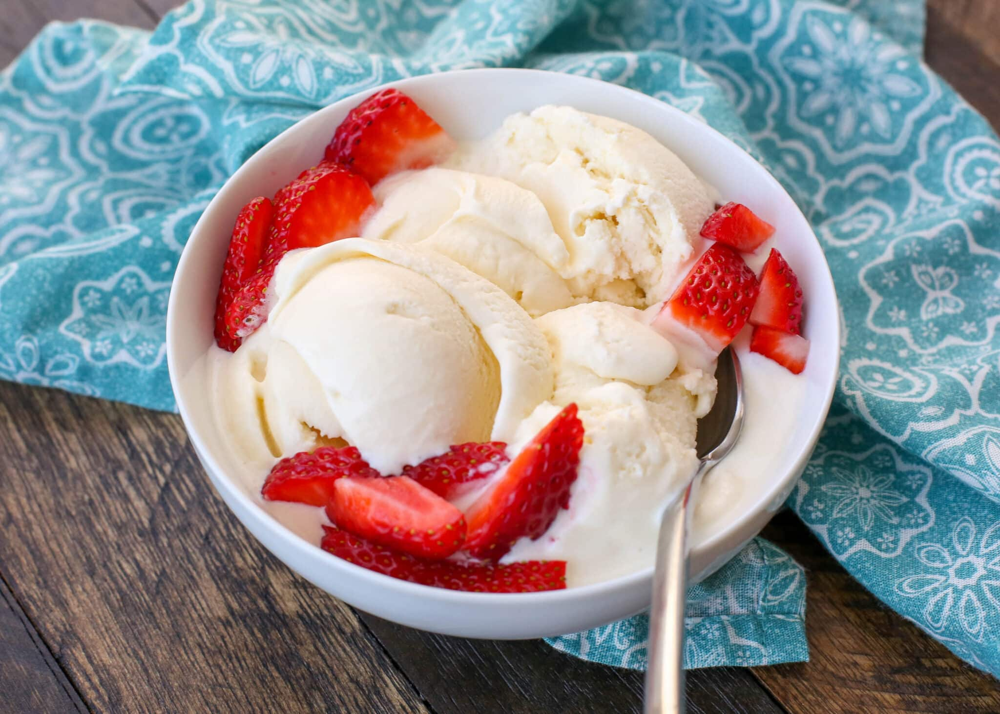

The History of Desserts
The word "dessert" comes from the French verb "desservir" which happened during the 17th century. For many people there must always be dessert after dinner. Desserts can apply to many different foods such as cakes, cookies, custards, gelatins, ice creams, pastries etc. A lot of different cultures have developed this "tradition" which have originated for many different reasons.
Top Desserts in America
A lot of people might argue what the best desserts are, but there is no doubt that there is a big variety of them. These are just some of the most known and liked desserts in the U.S
- Chocolate Chip Cookies
Chocolate chip cookies were started in the United States around 1938 and are the most popular and well known dessert in America. Also the first chocolate chip cookies were the size of a dime and were called "Butterdrop Do Cookies".

- Cheesecake
The Cheesecake as we now know was originated by ancient Greeks. It was made as an accident while trying to make another dessert from that time. Cheesecake was also given to the athletes of the first olympic games.

- Apple Pie
The first apple pie recipe was created in England in around 1381. The first pies did not have sugar because of how expensive it was, but as time went on people started to incorporate other ingredients for example sugar, whipped cream, or even ice cream.
- Carrot Cake
What makes carrot cake so popular is a very different ingredient. This cake contains carrots which are in the name. This type of cake was invented during the middle ages by Europeans when it was hard to get ahold of certain ingredients so they had to come up with substitutes.

- Ice Cream
The United States is the country that consumes the most ice cream with vanilla being the most popular flavor. Ice cream was first created in China about 200 B.C by using rice and milk mixtures and freezing it.

Though a lot of the most popular desserts originated from elsewhere they have made their way around the world and evolved as they do. We now get to personalize some of these whether it's adding or taking aways ingredients to certain treats for our liking.
Recipe of the day
Another dessert not mentioned above that deserves recognition is the famous Creme Brulee. Below is the recipe to make this dessert.
Step 1:
Preheat the oven to 300 degrees F (150 degrees C).
Step 2:
Beat egg yolks, 4 tablespoons white sugar and vanilla extract in a mixing bowl until thick and creamy.
Step 3:
Pour cream into a saucepan and stir over low heat until it almost comes to boil. Remove the cream from heat immediately. Stir cream into the egg yolk mixture; beat until combined.
Step 4:
Pour cream mixture into the top pan of a double boiler. Stir over simmering water until mixture lightly coats the back of a spoon, about 3 minutes. Remove mixture from heat immediately and pour into a shallow heat-proof dish.
Step 5:
Bake in preheated oven for 30 minutes. Remove from oven and cool to room temperature. Refrigerate for at least 1 hour or overnight.
Step 6:
Preheat oven to broil.
Step 7:
In a small bowl combine remaining 2 tablespoons white sugar and brown sugar. Sift this mixture evenly over custard. Place dish under broiler until sugar melts, about 2 minutes. Watch carefully so as not to burn.
Step 8:
Remove from heat and allow to cool. Refrigerate until custard is set again.